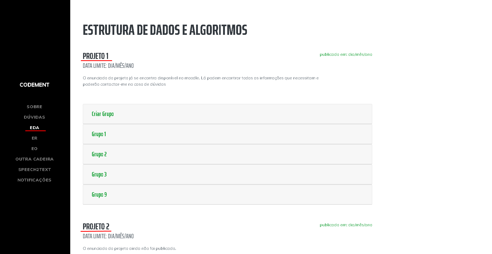

Sistema CodeMent
Explicação do funcionamento do sistema
- Criado: 02-06-2020
- By: Grupo 9
- Email: er-grupo9@gmail.com
Os alunos de E.R. do ano letivo 2019/2020 foram chamados a contribuir para a batalha que as universidades portuguesas estão a travar, através de aulas não presenciais, durante a propagação de uma pandemia. Desta forma, foi solicitado a implementação do sistema CodeMent.
Este sistema visa a auxiliar professores na explicação do código de qualquer linguagem de programação a alunos dos diferentes ciclos de estudos. Na prática este sistema tem uma principal tarefa muito simples, permitir deixar comentários de voz em diferentes partes de código enviado por um aluno. Poderá também ser usado para publicar vídeo-aulas de implementação.
Espera-se ainda que o sistema permita mais algumas funcionalidades. Deverá conseguir traduzir a mensagem de voz em texto automaticamente e colocar como comentário da função/bloco de código. Também será interessante manter uma versão dos comentários (pois um professor poderá comentar o mesmo código várias vezes).
Mudanças efectuadas
Explicação das mudanças feitas
10 Requisitos Principais
- 2.8. O sistema deverá permitir a partilha de vídeo-aulas de implementação.
- 1.7. O sistema deverá permitir que o discente aceda às vídeo-aulas de implementação.
- 2.6. O sistema deverá permitir que o docente adicione comentários no código.
- 1.3. O sistema deverá permitir a receção de ficheiros enviados pelos docentes.
- 2.3. O sistema deverá permitir a receção de ficheiros enviados pelos discentes.
- 3.2. O sistema deverá permitir distinguir os diferentes tipos de utilizadores sendo eles docente/discente.
- 1.2. O sistema deverá permitir o envio de ficheiros para os docentes do grupo.
- 1.4. O sistema deverá permitir a participação em eventos de avaliação.
- 1.6. O sistema deverá possibilitar que o discente destaque os blocos de código que tem dúvidas.
- 2.2. O sistema deverá permitir o envio de ficheiros para os discentes do grupo.
Como aceder ao nosso sistema
O utilizador ao entrar no sistema necessita de efetuar o login. Este terá de introduzir o seu número de indentificação, e a sua palavra-chave. Visto que o projeto ainda se encontrar numa fase de protótipo o utilizador poderá escolher entre a opção de docente ou discente (indicado no retângulo), e após clicar num desses respetivos botões a palavra passe será introduzia automaticamente, escrevendo respetivamente a primeira para a opção de entrar como docente no sistema e a segunda como discente.
Todas a funcionalidades do Docente
O docente tem a funcionalidade de corrigir e ajudar os discentes em todas dúvidas de código que possam existir. Para uma maior eficácia e simplicidade, este usufrui de ferramentas, como o speech-to-text; assinalar blocos de código e comentar linhas de código. Para um fácil envio e receção de documentos, utilizamos a plataforma do Github, como suporte ao sistema.
Acessar à cadeira
No Menu inicial o docente tem a capacidade de acessar às suas cadeiras leccionadas, como podemos observar na imagem. Para além disto, este usufrui de um botão para criar nova cadeira, sendo que não está atualmente implementado (Não é requisito prioritário).
Visualizar cadeiras
Neste separador o docente é capaz de visualizar e navegar pelas suas cadeiras lecionadas em conjunto com a secção de tirar dúvidas aos seus alunos. Em cada cadeira, é possível ver os momentos de avaliação da disciplina (eventos criados pelo docente). As dúvidas são geradas pelos alunos e disponiveis no ecrâ do docente para que este fornecer ajuda.
Criar evento
O docente, se clicar no botão Eventos terá disponivel 2 funcionalidades, é permitido criar e visualizar eventos. Caso o docente queira criar um evento, poderá expecificar a disiciplina, nome do eventos, data do evento e a informação correspondente do mesmo. Após criado o evento o docente recebe um feedback para verificar que o evento foi criado com sucesso.
Passo 1
Passo 2
Visualizar evento
No sistema, o docente ao clicar no botão Eventos . Poderá escolher a opção Visualizar Eventos, deste modo consegue ver toda a informação acerca dos mesmos tal como a cadeira, data e informação que digitou.
Passo 1
Passo 2

Adicionar aluno/s
Aqui o docente usufrui da funcionalidade de adicionar um elemento a um momento avaliação. Este poderá ser um grupo de alunos ou um aluno individual. Para que esta funcionalidade seja devidamente criada é necessário preencher um pequeno formulário com o nome do aluno ou grupo, numero de aluno (no caso de um grupo, deverá de ser escolhido um delegado para preencher este campo), o(s) nome(s) do(s) aluno(s) e o link do repositório criado pelo(s) aluno(s). Estas informações devem de ser pedidas aos alunos por parte do docente.
Momentos de avaliação /dúvidas
Ao clicar no elemento é possivel ver uma descrição e o nome dos alunos, para além disso o docente dispõe a possibilidade de realizar o "download" dos ficheiros que estão no repositório partilhado pelo(s) respetivo(s) aluno(s) dando a possibilidade de ler então o código. O botão "upload" serve para que este, depois de realizar os comentários por voz e texto e eventuais marcações de código,possa enviar o projeto devolta com o ficheiro de audio criado. Por fim também é disponível a este um acesso rápido de comunicação com o aluno ou delegado do grupo (botão "email").
Download
Ao clicar neste botão irá iniciar automaticamente um download dos ficheiros do repositório partilhado pelos discentes. Este poderá ser encontrado na secção "transfêrencias" do seu browser. Nota: Os ficheiros de código deverão de ser sempre importado através do IDE Visual Studio Code.
Upload
Ao clicar neste botão irá abrir um novo separador no seu browser com uma janela pronta para importar os ficheiros (comentários de voz e video e ficheiros comentados no código partilhado). Estes poderão ser arrastados para o retângulo ou poderá clicar em "Upload files".
Speech to text
No lado esquerdo,existe um botão que irá guia-lo para a realização do ficheiro de voz facilitando deste modo o comentário ao código. Após clicar em "esclarecer dúvida" é possível selecionar a opção de gravar uma mensagem de vídeo e voz ou apenas voz. De seguida clique em "gravar", após isto deverá de clicar em começar para gravar e em finalizar para acabar a gravação. Caso seja necessário clique em permitir gravar o áudio e video no seu browser para iniciar a captura de som/video. Existe um display em que é possivel reproduzir novamente antes de realizar o download dos ficheiros. Poderá gravar novamente outro comentário se necessário, se não, poderá clicar no 2 ficheiros gerados (um de voz e video ou apenas voz, e outro ficheiro em texto gerado pelo seu ditado). Estes documentos deverão de ser utilizados para a realização do upload no repositório do aluno já mencionado anteriormente

Marcador
O docente também terá que ter a estansão para encontrar os marcadores introduzidos pelos discentes, assim possibilita encontrar as dúvidas mais facilmente num ficheiro com muitas linhas de código pois se o docente clicar no marcado na barra de scroll irá diretamente para a secção do código pretendido pelo discente.
Todas a funcionalidades do Aluno
O discente tem a funcionalidade de visualizar cadeiras e eventos de avaliação, expor dúvidas e compartilhar ficheiros.
Visualizar Cadeira
No Menu inicial o discente tem a capacidade visulizar as cadeiras que está inscrito, como podemos observar na imagem.
Visualizar evento
Passo 1
O aluno consegue visualizar no nosso sistema eventos de avaliação ao clicar a partir da página inicial Eventos Visualizar Eventos.
Passo 2
Após completar o primeiro passou com sucesso irá visualizar a seguinte página que contém a descrição dos eventos em lista.
Marcador
Ao discente, é possível adicionar um marcador para representar a parte do código em que tem dúvidas, através da extensão "TODO highlight" o discente apenas introduzir dentro do comentário a seguência de caracteres "FIXME", automaticamente cria um marcador visível no código e na barra de scroll à direita.
Como colocar uma dúvida
Passo 1
O discente possui um botão criar , permite introduzir o link do repositório e esse repositório irá conter esse ficheiro com o código, onde se encontra a dúvida. Este link irá ser partilhado com o docente na secção de dúvidas FIXME:
Passo 2
Como navegar no site
Estrutura navegação principal

Estrutura navegação secundária
Estrutura navegação principal

Navigação (Mobile)
Estrutura navegação principal
Navigação (Mobile)
Estrutura navegação secundária
Informações
Todas as informações disponiveis aqui.
Todas as informações disponiveis aqui.
Todas as informações disponiveis aqui.
Formulário de contato Seguir os seguintes passos
Layout do Site